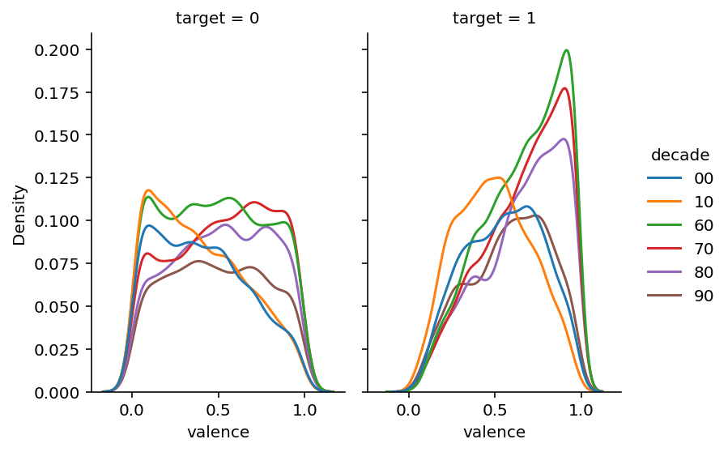
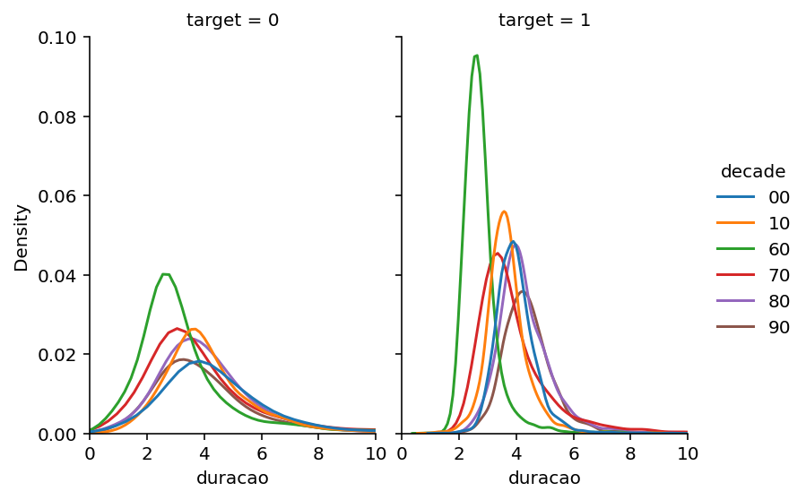
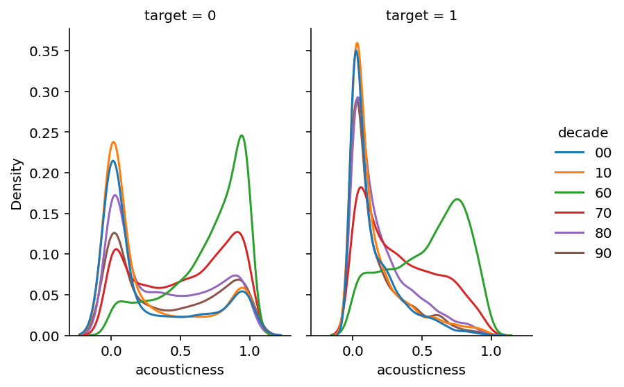
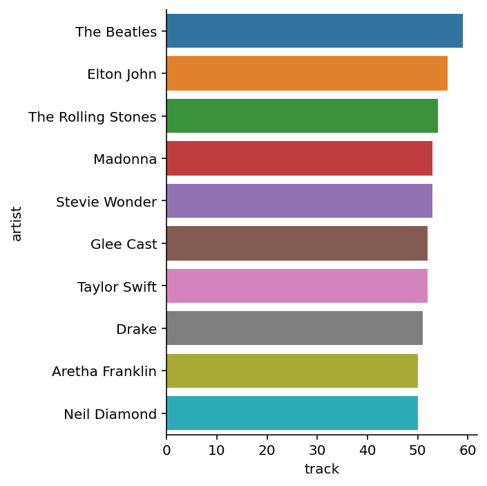
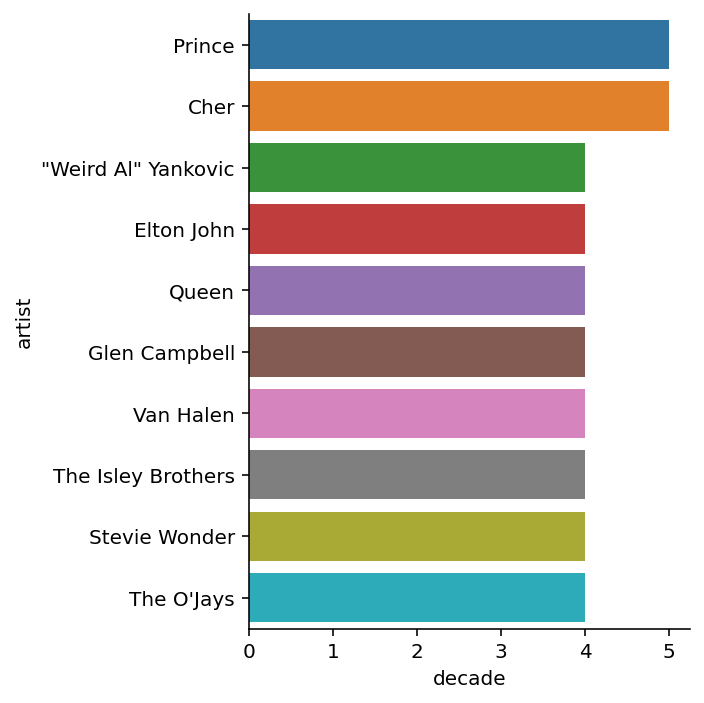

Code
import pandas as pd
import glob as glob
import os as os
import seaborn as sb
import matplotlib.pyplot as pltO dataset escolhido foi baixado do Kaggle e ele trata sobre músicas lançadas desde a década de 60 até os anos 2010.
O objetivo da análise é avaliar quais características mudaram nas músicas ao longo das décadas e se as músicas consideradas hits continuam com as mesmas características ao longo do tempo ou se houve alguma mudança. Além disso, vamos dar uma olhada em quem foram os artistas que lançaram mais hits ao longo das décadas.
A linguagem utilizada será python e as análises exploratórias e visualização serão feitas utilizando as bibliotecas pandas, glob, os, seaborn e matplotlib.
import pandas as pd
import glob as glob
import os as os
import seaborn as sb
import matplotlib.pyplot as pltPara importação dos dados utilizamos o método read_csv do pandas. Como se tratavam de vários datasets, cada um contendo músicas pertencentes à uma década diferente, a solução encontrada foi criar um caminho para onde estavam os arquivos, ler cada um deles, adicionar uma coluna para identificar qual década do lançamento da música e por fim, concatenar todos eles em um unico dataframe. Para isso utilizamos as bibliotecas glob e os.
path = r'D:/Documents/Curso-R/Python-para-usuarios-R/trabalho_final_python/'
files = glob.glob(path + "/*.csv")
spotify = pd.concat([pd.read_csv(files).assign(decade=os.path.basename(files).split('.')[0])
for files in files])Para uma rápida análise exploratória, vamos utilizar dois métodos, o info e o describe.
Com o resultado obtido do info, foi possível observar que o dado se trata de um dataframe contendo 20 colunas e 41106 linhas, sendo os tipos presentes:
spotify.info()<class 'pandas.core.frame.DataFrame'>
Int64Index: 41106 entries, 0 to 5519
Data columns (total 20 columns):
# Column Non-Null Count Dtype
--- ------ -------------- -----
0 track 41106 non-null object
1 artist 41106 non-null object
2 uri 41106 non-null object
3 danceability 41106 non-null float64
4 energy 41106 non-null float64
5 key 41106 non-null int64
6 loudness 41106 non-null float64
7 mode 41106 non-null int64
8 speechiness 41106 non-null float64
9 acousticness 41106 non-null float64
10 instrumentalness 41106 non-null float64
11 liveness 41106 non-null float64
12 valence 41106 non-null float64
13 tempo 41106 non-null float64
14 duration_ms 41106 non-null int64
15 time_signature 41106 non-null int64
16 chorus_hit 41106 non-null float64
17 sections 41106 non-null int64
18 target 41106 non-null int64
19 decade 41106 non-null object
dtypes: float64(10), int64(6), object(4)
memory usage: 6.6+ MBJá o describe nos retornou todas as colunas que se enquandravam no quesito número e mostrou a contagem, a média, o desvio padrão, o número mínimo, 25%, 50%, 75% e o número máximo encontrado.
spotify.describe()| danceability | energy | key | loudness | mode | speechiness | acousticness | instrumentalness | liveness | valence | tempo | duration_ms | time_signature | chorus_hit | sections | target | |
|---|---|---|---|---|---|---|---|---|---|---|---|---|---|---|---|---|
| count | 41106.000000 | 41106.000000 | 41106.000000 | 41106.000000 | 41106.000000 | 41106.000000 | 41106.000000 | 41106.000000 | 41106.000000 | 41106.000000 | 41106.000000 | 4.110600e+04 | 41106.000000 | 41106.000000 | 41106.000000 | 41106.000000 |
| mean | 0.539695 | 0.579545 | 5.213594 | -10.221525 | 0.693354 | 0.072960 | 0.364197 | 0.154416 | 0.201535 | 0.542440 | 119.338249 | 2.348776e+05 | 3.893689 | 40.106041 | 10.475673 | 0.500000 |
| std | 0.177821 | 0.252628 | 3.534977 | 5.311626 | 0.461107 | 0.086112 | 0.338913 | 0.303530 | 0.172959 | 0.267329 | 29.098845 | 1.189674e+05 | 0.423073 | 19.005515 | 4.871850 | 0.500006 |
| min | 0.000000 | 0.000251 | 0.000000 | -49.253000 | 0.000000 | 0.000000 | 0.000000 | 0.000000 | 0.013000 | 0.000000 | 0.000000 | 1.516800e+04 | 0.000000 | 0.000000 | 0.000000 | 0.000000 |
| 25% | 0.420000 | 0.396000 | 2.000000 | -12.816000 | 0.000000 | 0.033700 | 0.039400 | 0.000000 | 0.094000 | 0.330000 | 97.397000 | 1.729278e+05 | 4.000000 | 27.599792 | 8.000000 | 0.000000 |
| 50% | 0.552000 | 0.601000 | 5.000000 | -9.257000 | 1.000000 | 0.043400 | 0.258000 | 0.000120 | 0.132000 | 0.558000 | 117.565000 | 2.179070e+05 | 4.000000 | 35.850795 | 10.000000 | 0.500000 |
| 75% | 0.669000 | 0.787000 | 8.000000 | -6.374250 | 1.000000 | 0.069800 | 0.676000 | 0.061250 | 0.261000 | 0.768000 | 136.494000 | 2.667730e+05 | 4.000000 | 47.625615 | 12.000000 | 1.000000 |
| max | 0.988000 | 1.000000 | 11.000000 | 3.744000 | 1.000000 | 0.960000 | 0.996000 | 1.000000 | 0.999000 | 0.996000 | 241.423000 | 4.170227e+06 | 5.000000 | 433.182000 | 169.000000 | 1.000000 |
Para realizar a comparação, as linhas foram filtradas com base no valor da coluna target. Se a coluna target fosse 1, a música era um hit, e se o valor fosse 0, a música era um flop. Feito isso, recuperamos os valores da mediana fornecido pelo describe e depois concatenamos usando o método concat do pandas.
Foi possível observar que em geral, as músicas consideradas hits tiveram uma mediana maior na danceability, energy, valence (mais alegres) e uma mediana menor em acousticness, significando que não se tratam de músicas acústicas.
hit = spotify.query("target == 1")
flop = spotify.query("target == 0")
hit_median = hit.describe().loc["50%"]
flop_median = flop.describe().loc["50%"]
median_joined = pd.concat([hit_median, flop_median], axis = 1)
median_joined.columns = ["hit_mediana", "flop_mediana"]
median_joined| hit_mediana | flop_mediana | |
|---|---|---|
| danceability | 0.610000 | 0.48300 |
| energy | 0.642000 | 0.53300 |
| key | 5.000000 | 5.00000 |
| loudness | -8.273000 | -10.66400 |
| mode | 1.000000 | 1.00000 |
| speechiness | 0.040600 | 0.04600 |
| acousticness | 0.181000 | 0.43900 |
| instrumentalness | 0.000006 | 0.01050 |
| liveness | 0.130000 | 0.13400 |
| valence | 0.633000 | 0.47000 |
| tempo | 118.881000 | 115.90600 |
| duration_ms | 220440.000000 | 214000.00000 |
| time_signature | 4.000000 | 4.00000 |
| chorus_hit | 35.352590 | 36.40476 |
| sections | 10.000000 | 10.00000 |
| target | 1.000000 | 0.00000 |
Para avaliar isso, levamos em conta a váriavel valence, que varia de 0 a 1, onde quando mais próximo de 0, mais ela é negativa (triste, depressiva ou raivosa) e quando mais próxima de 1, mais positiva, alegre e eufória ela é.
Para as músicas consideradas hit, uma coisa interessante foi observada. Nas décadas de 60, 70 e 80 elas eram consideradas mais alegres, mas ao passar para os anos 90, 2000 e 2010, é possível observar um deslocamento na curva em direção à esquerda, mostrando que os hits não se tratam de músicas necessariamente muito alegres.
Com relação às músicas consideradas flop, a distribuição é bem parecida ao longo das décadas. Interessante chamar atenção para a década de 2010 que tem seu pico próximo de 0, mostrando que as músicas consideradas flop são tristes.
spotify_2 = (spotify
.filter(["valence", "decade", "target"])
.reset_index()
)
sb.displot(spotify_2, x = "valence", hue = "decade", kind = "kde", col = "target", height=4, aspect=.7)<seaborn.axisgrid.FacetGrid at 0x2902fd0a550>
A duração das músicas consideradas hits foi em média 4 minutos, não ouve muita variação em relação às músicas consideradas flop. Uma coisa interessante é que na década de 60 as músicas em geral eram mais curtas que as produzidas nas décadas seguintes.
spotify_duracao = (spotify
.assign(duracao = spotify.duration_ms / 60000)
.reset_index()
)
sb.displot(data = spotify_duracao, x = "duracao", kind = "kde", hue = "decade", col = "target", height=4, aspect=.7)
plt.xlim(0,10)(0.0, 10.0)
Para responder isso, avaliamos a distribuição dos valores que dizem se as músicas são acústicas (valor próximo de 1) ou se são feitas por meio eletrônico (valor próximo de 0).
Foi observado que para músicas consideradas hits, desde os anos 70 é possível ver que os valores estão deslocados para o lado esquerdo do gráfico, ou seja, em geral não são músicas acústicas. Já para a década de 60, provavelmente por causa de tecnologias ainda não existentes, as músicas são majoritariamente acústicas.
Para as músicas consideradas flop, é possível observar a presença de picos tanto em valores próximos a 0 quanto próximos à 1. O que sugere que o fato de ser acústico pode levar a música a ser um flop, mas nem todos os flops são músicas acústicas.
spotify_3 = spotify.reset_index()
sb.displot(data = spotify_3, x = "acousticness", kind = "kde", hue = "decade", col = "target", height=4, aspect=.7)<seaborn.axisgrid.FacetGrid at 0x290311e6f10>
Os artistas que mais tiveram hits ao longo do tempo foram nomes bem conhecidos. No topo da lista estão os Beatles, seguidos por Elton John, Rolling Stones e Madonna. Dos cantores mais novos, estão Drake, Taylow Swift e o elenco de Glee.
target = (spotify
.query("target == 1")
.filter(["artist", "track", "decade"])
.groupby(["artist", "decade"])
.count()
.sort_values(["decade","track"], ascending = False)
.reset_index()
)
top_tracks = (target
.groupby("artist")
.sum()
.sort_values(["track"], ascending = False)
.reset_index()[:10]
)
sb.catplot(data = top_tracks, x = "track", y = "artist", kind = "bar")<seaborn.axisgrid.FacetGrid at 0x2903210b730>
Com relação aos artistas que mais lançaram hits em diferentes décadas, temos uma lista um pouco diferente. Em primeiro e segundo lugar aparecem o Prince e a Cher, lançando hits em 5 décadas diferentes!
Também é possível reparar a presença de Stevie Wonder e Elton John nessa lista, mostrando que além de ter uma grande quantidade de hits, eles foram lançados ao longo de 40 anos!
top_artist = (target
.filter(["artist","decade"])
.groupby(["artist"])
.count()
.sort_values(["decade"], ascending = False)
.reset_index()[:10]
)
sb.catplot(data = top_artist, x = "decade", y = "artist", kind = "bar")<seaborn.axisgrid.FacetGrid at 0x290320fe490>
Dado os resultados obtidos, podemos tirar algumas conclusões, como: